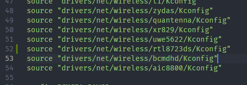
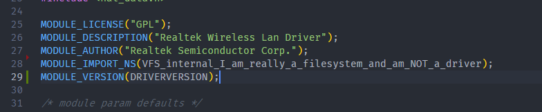
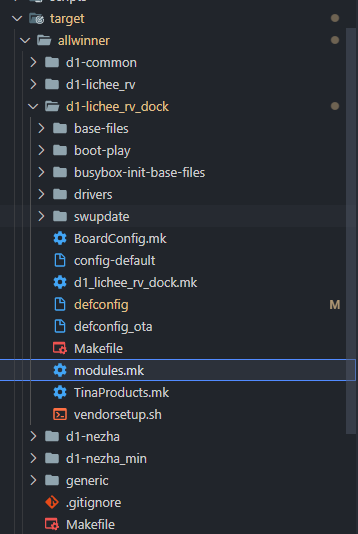

D1 LicheeRV Dock 移植RTL8723DS驱动
这里讲解怎样自己添加驱动
手动焊接RTL8723DS之后，现在开始移植驱动程序。
先获取源码：https://github.com/lwfinger/rtl8723ds
下载完成后，把驱动文件复制到 tina-d1-open\lichee\linux-5.4\drivers\net\wireless\rtl8723ds 里，没有rtl8723ds文件夹记得新建一个。
修改tina-d1-open\lichee\linux-5.4\drivers\net\wireless\Makefile，加一行
obj-$(CONFIG_RTL8723DS) += rtl8723ds/

修改tina-d1-open\lichee\linux-5.4\drivers\net\wireless\Kconfig，加一行
source "drivers/net/wireless/rtl8723ds/Kconfig"

修改tina-d1-open\lichee\linux-5.4\drivers\net\wireless\rtl8723ds\os_dep\linux\os_intfs.c；
加一行
MODULE_IMPORT_NS(VFS_internal_I_am_really_a_filesystem_and_am_NOT_a_driver);

修改tina-d1-open\lichee\linux-5.4\drivers\net\wireless\rtl8723ds\os_dep\linux\rtw_cfgvendor.c
在每一行.policy = VENDOR_CMD_RAW_DATA, 下面加上 .maxattr = 1,

修改tina-d1-open\target\allwinner\d1-lichee_rv_dock\modules.mk，增加以下内容：

（其中的d1-lichee_rv_dock 是我的板级配置，请选择自己的板级配置比如d1-nezha，如下图）

进入内核配置，勾选Realtek 8723D SDIO or SPI WiFi为Module（ < M > 不是 < * > ）
make kernel_menuconfig
Device Drivers ->
Network device support ->
Wireless LAN ->
<M> Realtek 8723D SDIO or SPI WiFi
进入Tina配置，勾选相关驱动
make menuconfig
Firmware ->
<*> r8723ds-firmware.............................. RealTek RTL8723DS firmware
Kernel modules ->
Wireless Drivers ->
<*> kmod-net-rtl8723ds........................... RTL8723DS support (staging)
保存，编译，打包
make -j8
pack
烧录后就能看到